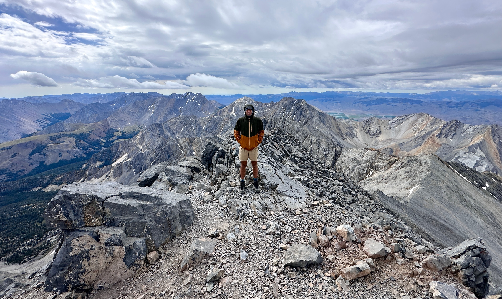

I’m a second-year geophysics PhD student at Caltech.
My primary research focus is glaciology, but I am also interested in seismology and physical oceanography.
I grew up in Seattle, Washington, where camping and hiking in the Cascades gave me an appreciation for both the beauty and hazards of geophysical processes.
When I’m not doing research, I like to hike, bike, and run in the mountains of Southern California.

My research in glaciology has focused on the ice shelves (floating extensions of glaciers that extend onto the ocean) that surround Antarctica.
I’m drawn to glaciology both for its inherent scientific interest and for its societal relevance in projecting future sea level rise.
Ice shelves play a key role in the response of Antarctica to a warming atmosphere and ocean as they support (buttress) the grounded ice that flows into them.
In this way ice shelves, even though they have already displaced their equivalent mass of water and thus made their contribution sea level rise, regulate the mass loss from the ice sheet.
As ice shelves thin, primarily due to melt from warmer ocean waters, they will provide less buttressing, and may even transition to an unstable state and collapse rapidly.
Understanding these processes is key to making credible predictions of sea level rise for the remainder of the 21st century and beyond.
My research involves developing simple models to understand ice shelves and how they respond to external forcings and using remote-sensing data from satellites to constrain the processes governing ice deformation and fracture.
In addition to glaciology, I’m interested in how we can use the tools of seismology to better understand environmental processes. For an undergraduate research project, I worked with professor Grace Barcheck at Cornell and scientists at the Pacific Northwest Seismic Network and Cascades Volcano Observatory to develop a machine learning model to detect mass movements (e.g., rockfalls, landslides, and avalanches) in continuous seismic data. Tools like this provide valuable information about what drives these events over time (e.g., seasonal and daily patterns), and also have the potential to be applied to real-time warning systems. Currently, I am working on a project on applying seismic ocean thermometry to the Southern Ocean. Seismic ocean thermometry utilizes repeating earthquakes to make precise measurements of how the acoustic wavespeed in the ocean changes over time. By converting this velocity change to a temperature change, it can measure the small (on the order of 1/1000th of a °C per year) warming trends due to the increase of ocean heat content due to global warming. Applying seismic ocean thermometry to the Southern Ocean has the potential to provide a valuable, independent dataset in a region that, due to seasonal sea ice and inaccessibility during austral winter, is undersampled by traditional methods.
In addition to glaciology, I’m interested in how we can use the tools of seismology to better understand environmental processes. For an undergraduate research project, I worked with professor Grace Barcheck at Cornell and scientists at the Pacific Northwest Seismic Network and Cascades Volcano Observatory to develop a machine learning model to detect mass movements (e.g., rockfalls, landslides, and avalanches) in continuous seismic data. Tools like this provide valuable information about what drives these events over time (e.g., seasonal and daily patterns), and also have the potential to be applied to real-time warning systems. Currently, I am working on a project on applying seismic ocean thermometry to the Southern Ocean. Seismic ocean thermometry utilizes repeating earthquakes to make precise measurements of how the acoustic wavespeed in the ocean changes over time. By converting this velocity change to a temperature change, it can measure the small (on the order of 1/1000th of a °C per year) warming trends due to the increase of ocean heat content due to global warming. Applying seismic ocean thermometry to the Southern Ocean has the potential to provide a valuable, independent dataset in a region that, due to seasonal sea ice and inaccessibility during austral winter, is undersampled by traditional methods.
TODO